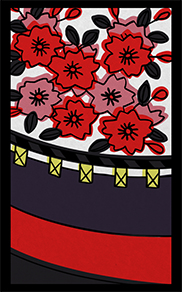
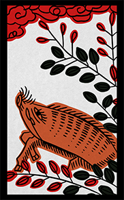
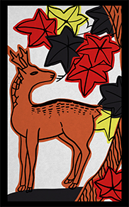
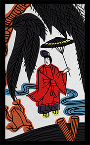
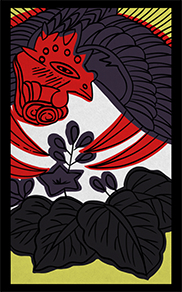

OVERVIEW
シナリオ概要
シナリオ
クトゥルフ神話TRPG6版「私立花ヶ丘高校秘密倶楽部」
舞台
現代日本 学校 夏休みの終わり
PL人数
十二人
セッションスタイル
通話を繋いだ状態のテキストセッション（半テキセ）に限定
環境
スマホ不可・PC推奨
プレイ時間
24 時間〜
PC 設定
秘匿あり、新規学生探索者限定
推奨技能
基本探索技能、オカルト、自衛程度の戦闘技能推奨
ロスト率
？
PvP 要素
不回避の PvP 要素あり （本シナリオでは PvP の定義をPCとPCが殺し合いに発展することと定義する）
あらすじ
あなたたちはそれぞれがオカルトに興味のある高校生だ。
毎日1話ずつ順番に怪談を語っていき、
1週間の最後に［NPC 菅原恋］が99話目を語り終えることで百物語は終了する。
物語は、百物語１日目にあなたたちが花ヶ丘高校へ集まるところから始まる。
HO
HO共通：あなたたちはそれぞれ怪談の語り部である。
HO1
松に鶴🦩
HO2
梅に鶯🐥
HO3
桜に幕🌸
HO4
藤に不如帰🦜
HO5
菖蒲に八橋💠
HO6
牡丹に蝶🦋
HO7
萩に猪🐗
HO8
芒に月🎑
HO9
菊に盃🍶
HO10
紅葉に鹿🦌
HO11
柳に燕🐦
HO12
桐に鳳凰🦚
シナリオについて
- 本シナリオはオンラインでのテキストセッション以外で回すことが禁じられています。
- 本シナリオはPL未通過でのKPは推奨されていません。想定されたギミックを活かせない場合があります。未通過でKPをする際は自分が未通過であること、ギミック通りの進行が難しい可能性があることをPLに伝える必要があります。（KPにとって難易度が高いシナリオです）
- シナリオの更新は作者のX（@meltcorgi）で通知されます。
- 本シナリオに対する全ての改変は、原則として作者により許容されています。1についても禁止事項ではありますが、絶対的なものではありません。ただし、不適切な改変が判明した場合には、作者の公式アカウントより匿名で注意喚起が行われることがあります。常識的範囲内で許容される改変については、特段の制限は設けられていません。なお、極端な内容の改変やボイスセッション等に限定したケースの場合のみ、注意喚起の対象となる可能性があります。
本シナリオに含まれる要素
- ・不回避のPVPがある
- ・自分のPCが相手のPCを殺害する
- ・自分のPCが相手のPCに殺害される
- ・PCの秘匿で他のPCに向けての感情を指定される
- ・PCの自己犠牲的死亡を必要とする場面がある
- ・男女関係なく妊娠の要素がある
- ・動物が酷い目に遭う
- ・虫を使った軽度の恐怖表現がある
- ・HO内容の偏りがある
本シナリオに直接的な性的描写は含まれませんが、上記の要素を考慮し、R18指定として販売されています。
NOTES
参加にあたって
◆ HO提出方法
- ・作成された個人タブにて提出。
- ・第1希望～第3希望まで記載すること。同率希望は無し、順位をつけての提出。
- ・HO分析シートも必ず提出すること。
- ・通過者からおすすめされたHOがある方は合わせて提出。
- ・判断がつかない場合の参考にする為に、提出時に〈1d100〉のダイスロールを個人タブで行うこと。
※HO分析シートと希望を確認した上でHOの決定をします。必ずしも希望通りになるとは限りません。御了承ください。
記入用フォーマット画像を見る（Discord）→